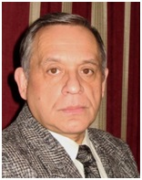

Те́биев Бори́с Каз-Гире́евич (Борис Константинович; род. 4 июля 1946, Тула, РСФСР) — российский учёный и общественный деятель, специалист в области истории отечественной школы и истории экономической науки в России, писатель, публицист. Доктор педагогических наук, доктор экономических наук, профессор, действительный член РАЕН, президент Международной педагогической академии.
Созданная Б.К. Тебиевым теория общественно-педагогического движения как генерирующего фактора развития народного образования положила начало научной школе историков народного образования в России.
У профессора Б.К. Тебиева более 30 учеников и последователей в области педагогики и экономики, кандидатов и докторов наук.